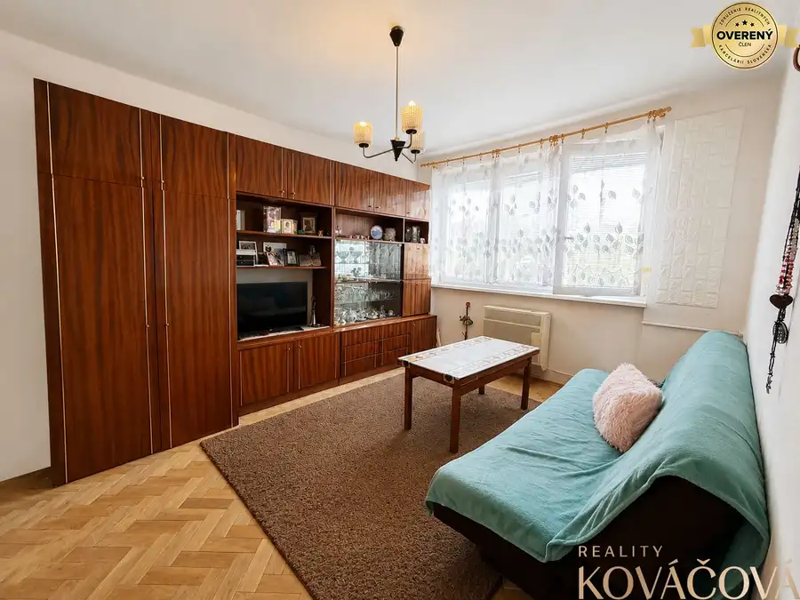
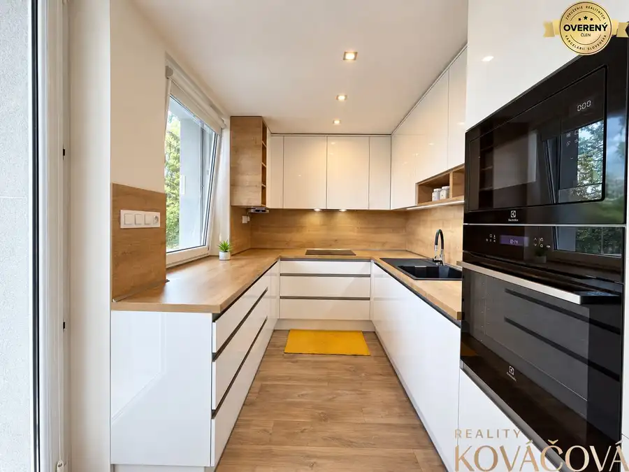
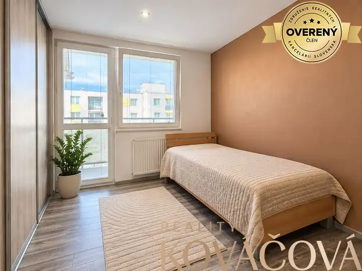
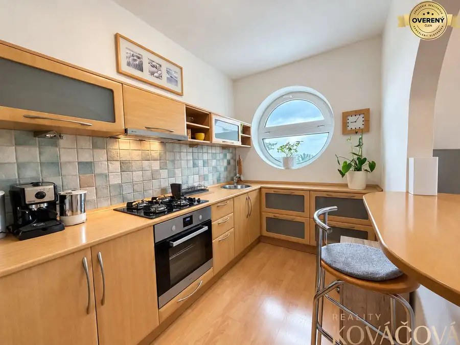
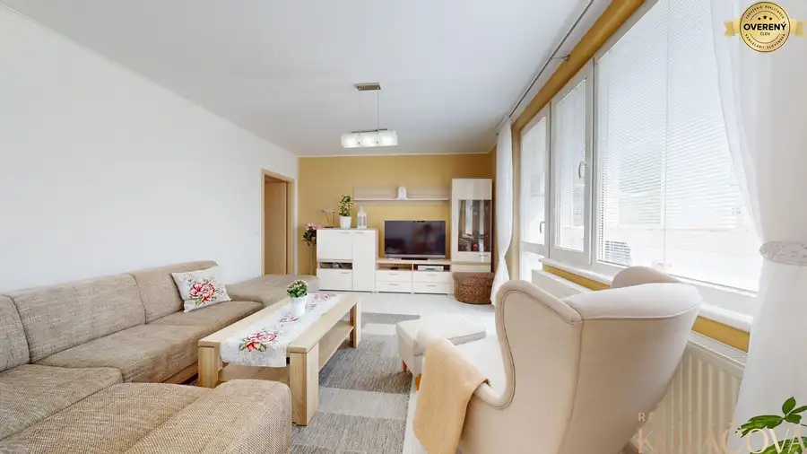

Aktuálna ponuka
Nehnuteľnosti, ktoré ponúkam
9 nehnuteľností na predaj a prenájom. Vyberte typ, alebo napíšte lokalitu.
9 z 9 ponúk
 Nebytové priestory2
3 700 €Na prenájom komerčný areál v obci Mníchová Lehota
Mníchova Lehota
220 m²
Realitná kancelária Reality KOVÁČOVÁ ponúka na prenájom komerčný areál s výbornou dostupnosťou v obci Mníchova Lehota, priamo pri hlavnom ťahu smer…
Nebytové priestory2
3 700 €Na prenájom komerčný areál v obci Mníchová Lehota
Mníchova Lehota
220 m²
Realitná kancelária Reality KOVÁČOVÁ ponúka na prenájom komerčný areál s výbornou dostupnosťou v obci Mníchova Lehota, priamo pri hlavnom ťahu smer…
 Chaty a chalupy7
25 000 €Na predaj pozemok s chatkou, Trenčín, Juh - Chrásť
Trenčín
332 m²
Pozemok s výmerou 332 m² ponúka príjemné miesto na oddych, záhradkárčenie či víkendové úniky z mesta. Súčasťou je murovaná chatka so zastavanou…
Chaty a chalupy7
25 000 €Na predaj pozemok s chatkou, Trenčín, Juh - Chrásť
Trenčín
332 m²
Pozemok s výmerou 332 m² ponúka príjemné miesto na oddych, záhradkárčenie či víkendové úniky z mesta. Súčasťou je murovaná chatka so zastavanou…
 Rodinné domy4
85 000 €Na predaj chalupa, Petrova Lehota
Petrova Lehota
2-izbový330 m²
Realitná kancelária Reality KOVÁČOVÁ ponúka na predaj rodinný dom z roku 1950, ktorý sa nachádza v pokojnej obci Petrova Lehota. Táto obec je…
Rodinné domy4
85 000 €Na predaj chalupa, Petrova Lehota
Petrova Lehota
2-izbový330 m²
Realitná kancelária Reality KOVÁČOVÁ ponúka na predaj rodinný dom z roku 1950, ktorý sa nachádza v pokojnej obci Petrova Lehota. Táto obec je…

Byt10 82 000 €Na predaj 3 izbový byt v pôvodnom stave v obci Horné Naštice Horné Naštice 3-izbový74 m²2. podlažie Reality KOVÁČOVÁ ponúka na predaj priestranný 3-izbový byt v obci Horné Naštice, vzdialenej približne 5 minút autom od Bánoviec nad Bebravou. Byt má… Rodinné domy10
49 000 €Na predaj chalupa s pozemkom 494 m² – Horná Súča, časť Repákovci
Horná Súča
43 m²
Realitná kancelária Reality KOVÁČOVÁ ponúka na predaj chalupu v pokojnej časti obce Horná Súča – Repákovci, vhodnú na víkendové pobyty, oddych v…
Rodinné domy10
49 000 €Na predaj chalupa s pozemkom 494 m² – Horná Súča, časť Repákovci
Horná Súča
43 m²
Realitná kancelária Reality KOVÁČOVÁ ponúka na predaj chalupu v pokojnej časti obce Horná Súča – Repákovci, vhodnú na víkendové pobyty, oddych v…

Byt10 239 000 €Na predaj zrekonštruovaný 3 izb. byt, Trenčín, ul. K výstavisku Trenčín 3-izbový72 m² Realitná kancelária Reality KOVÁČOVÁ ponúka na predaj kompletne zrekonštruovaný a zariadený 3-izbový byt na ulici K výstavisku v Trenčíne s výmerou…
Byt10 205 000 €Na predaj 4 izb. byt, kompletná rekonštrukcia, Trenčín ul. Halalovka Trenčín 4-izbový81 m²8. podlažie Byt sa nachádza na 8/8 poschodí, má výmeru 81 m² vrátane pivnice a vďaka dobre riešenej dispozícii ponúka dostatok priestoru najmä pre rodinu s…
Byt9 Cena dohodouNa prenájom čiastočne zariadený 1-izb. byt, Trenčín, ul. Staničná Trenčín 1-izbový35 m²2. podlažie Realitná kancelária Reality KOVÁČOVÁ ponúka na prenájom čiastočne zariadený 1-izbový byt s výmerou 39 m², ktorý sa nachádza na 3/4 poschodí bytového…
BytRezervované10 155 000 €3 izbový byt, Trenčín, ul. Šafárikova Trenčín 3-izbový73 m²5. podlažie Realitná kancelária Reality KOVÁČOVÁ ponúka na predaj 3-izbový byt v Trenčíne na ulici Šafárikova, v tichej lokalite hneď vedľa lesoparku Brezina.…Tomuto výberu zatiaľ nezodpovedá žiadna ponuka. Napíšte mi, čo hľadáte.